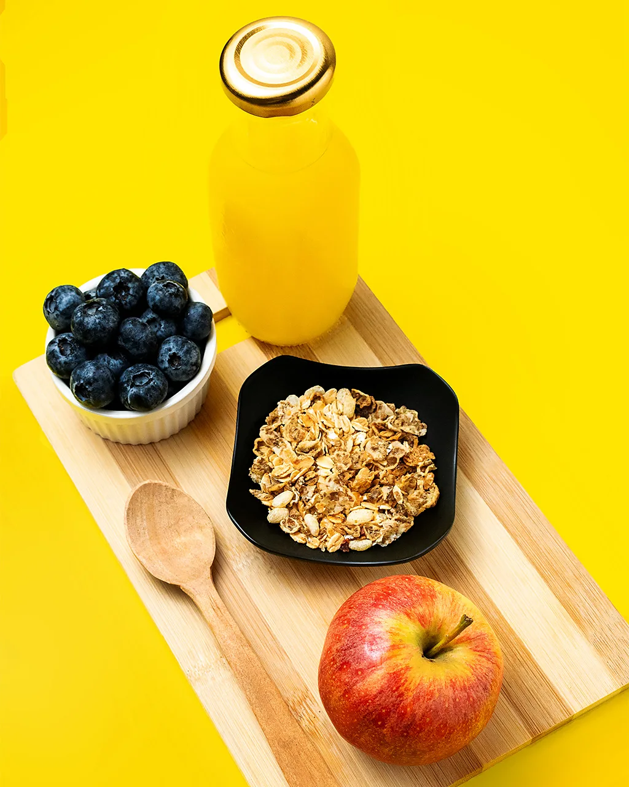
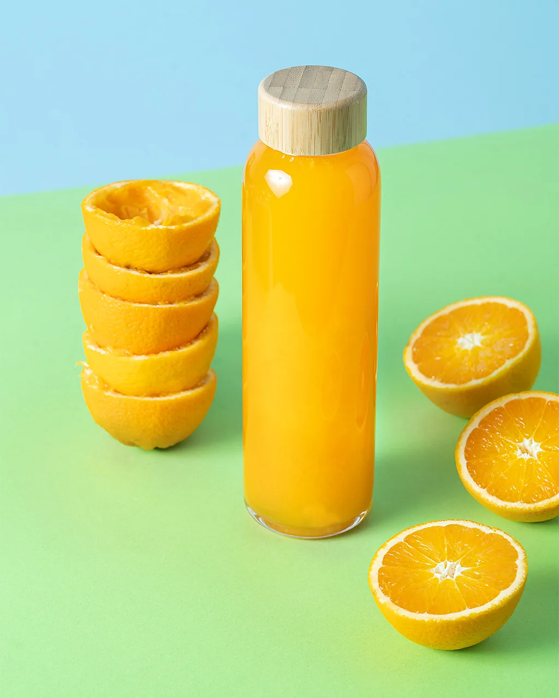

2 January 2026

The habit of drinking a glass of orange juice can have a considerable effect on your health.
If you're anything like me, then your idea of breakfast heaven includes an ice-cold glass of freshly squeezed orange juice. The trouble is that this sweet citrus drink has been demonised for some time.
While oranges themselves are packed full of vitamins, in drink-form, experts warn that orange juice delivers a sudden rush of sugar to the blood. Over time, this daily sugar-spike could lead to insulin resistance, raising the risk of diabetes, heart disease and obesity.
Or so the thinking goes. Yet actually, research is starting to show that despite its high sugar content, a daily glass of orange juice could bring all manner of health benefits.
To begin with, cohort studies – which track tens of thousands of people over time – show that individuals who eat lots of citrus fruits are less likely to go on to suffer from heart disease and stroke.
However most of these large studies asked people about how much fruit they ate, not how much fruit juice they drank. Eating whole fruit can have a substantially different effect on the body compared with drinking fruit juice.
"First of all, it's the speed of eating," says Federica Amati, a nutrition scientist at Imperial College London, UK. Amati points out that if you eat two or three oranges – the average amount it takes to make a small glass of orange juice – "it's going to take you longer to eat them, chew them and swallow them".
She adds, "In fact, most people probably wouldn't want to eat two or three, as that's quite a lot of oranges. Whereas when you're drinking a small glass – in a couple of seconds it's gone."
Whole fruit is also rich in fibre, which feeds the good bacteria in your gut, and is linked to health benefits such as a reduced risk of cardiovascular disease and colon cancer. Fibre also slows down the flow of sugars into our bloodstream. Orange juice – and other fruit juices – are made by crushing and pulping whole fruits, which strips them of most of their fibre.
Orange juice has been somewhat unfairly demonised (Credit: Getty Images)
The end result is that if you compared a person's blood sugar response from eating a whole orange versus drinking a juice, the whole orange would result in a fairly gradual rise, whereas a glass of orange juice has a more dramatic effect.
"[In orange juice], the sugars have been freed from their fibre capsules, and so they are absorbed very rapidly in the mouth and in the stomach. So that will lead to quite a rapid, quick rise in blood sugar," says Amati.
However for most people such a rise is not a problem, because insulin is released which then removes sugar from the bloodstream. However for someone with diabetes, a glass of OJ may not be such a good idea.
"I think the challenge with fruit juices generally is that they are technically free sugars, but that's not all they are," says Amati. "So yes, they do make your blood sugar go up, but – especially if they're freshly squeezed – they also have bioactive nutrients in them like vitamin C. So it's not about just freaking out because of the sugar, it's really contextualising it into the whole diet."
There are signs that frequent orange juice drinking could still confer benefits, despite high sugar content. For example one meta-analysis which pooled the results of 10 randomised controlled trials (RCTs) found that drinking 500ml (17 fl oz) of orange juice a day was associated with lower blood glucose levels, improved insulin function and lower levels of low-density lipoprotein (LDL), known as "bad cholesterol" – all signs of good heart health.
Another meta-analysis found that drinking a glass of orange juice every day for a matter of weeks was enough to lower systolic blood pressure in overweight and obese adults, as well as raise levels of high-density lipoprotein (HDL), often referred to as "good cholesterol".
It isn't just heart health; orange juice could be good for the brain too. In one trial, 24 healthy men aged between 30 and 45 drank either 240ml (8 fl oz) of 100% orange juice, or a sugary drink containing the same amount of calories. The participant's mood and cognitive function were tested before and six hours after drinking the beverage. Not only did the mental faculties of the OJ group increase after gulping down the drink, their subjective feelings of alertness did too.
"For the placebo, what we saw is a decline [in cognitive performance] over the day, with a much worse performance after six hours," says Daniel Lamport, associate professor of nutritional neuroscience at the University of Reading, UK, who led the study. "That's what you normally see, as people tend to get more tired and fatigued throughout the day."
There are differences in the health effects of eating an orange and drinking it's juice (Credit: Getty Images)
However the participants who downed orange juice managed to retain their alertness. A glass of orange juice could therefore be a better choice than a sugary drink, potentially boosting brain power and focus in the short term – a good thing if you've got an important meeting scheduled in your diary.
There are signs orange juice could have a long-term impact on brain health and ageing too. In a second study, Lamport and his team asked 37 healthy older adults aged 60-81 to drink either two glasses of 100% orange juice every day for eight weeks, or two orange-flavoured drinks which contained a similar amount of sugar and calories. Older adults who drank orange juice had significantly better cognitive function compared to the placebo group after eight weeks.
There are plausible explanations for why orange juice might improve health. Oranges are packed full of vitamin C, which boosts immunity, aids iron absorption and helps make collagen for skin. They also contain other vitamins and minerals such as folate, calcium, potassium and thiamine (vitamin B1).
However the molecules thought to be behind orange's protective role in heart and brain health are known as flavonoids – a class of plant compounds found in fruits and vegetables that give plants their vibrant colours and help protect them from stress and infection. Flavonoids have antioxidant properties, which means they can neutralise so-called "free radicals" – extremely reactive chemicals that can damage cells and accelerate biological ageing. Flavonoids are also well known for their anti-inflammatory properties.
"Inflammation is an important part of the immune response, but when you have excessive inflammation, or if you have sustained inflammation that doesn't calm down, it damages your tissues and it's detrimental for pretty much every body system," says Amati. "By having anti-inflammatory compounds available when your body wants to switch off inflammation, it's like having the fire hydrants available when you need to put the fire out."
One compound in particular that has received a lot of interest is hesperidin – a flavonoid present in citrus fruits. Hesperidin is thought to be behind orange juice's ability to influence blood pressure. For example, a 2025 study suggests that orange juice – and hesperidin – could work its wonders by activating genes that help to lower inflammation and help blood vessels relax.
The study tracked 85 adults who drank 500ml of pure pasteurised orange juice every day for two months. After the 60 days were up, blood tests showed that many of the genes associated with triggering inflammation and high blood pressure had become less active.
It's thought that flavonoids, and hesperidin in particular, help blood vessels relax by increasing levels of the gas nitric oxide in the inner lining of blood vessels, known as the endothelium.
"The endothelium has this function of making your vessels stiffer if you need your blood pressure to go up, for example if you need to run away," says Amati. "But then it also needs to be able to relax as well, because otherwise you'd continuously have stiffened blood vessels, which would put too much pressure on the heart and the lungs. So you need the endothelium to be able to relax and squeeze when needed."
Improved blood flow could also explain the cognitive benefits of OJ. Research shows that Alzheimer's disease and other types of dementia may be – at least in part – caused by altered blood flow in the brain.
According to Lamport there is also good evidence showing that flavonoids generally can improve cognitive function and mood. For instance, he cites research showing that eating flavonoids improves the performance of rodents on a maze task, and results in more neuronal connections being formed in the hippocampus, a region of the brain responsible for forming new memories. Other foods that are rich in flavonoids include blueberries, tea, grapes, wine and dark chocolate.
"One possible mechanism is that [flavonoids] essentially improve blood flow to your brain, so that then makes you feel more alert, and able to do better on cognitive tasks," says Lamport.
According to Lamport, increased blood flow over a longer time period could also improve the brain's ability to form new connections between neurons, or protect against the decline of such connections.
"That's why – potentially – flavonoids are so helpful in older adults, because this is a time period where you naturally see this decline in neuronal plasticity and neuronal connections, so [flavonoids] could slow that process," says Lamport.
Orange juice is rich in vitamin C and folate (Credit: Getty Images)
Other explanations for OJ's superpowers could relate to its ability to influence the gut microbiome – the bustling community of bacteria, viruses and yeasts that inhabit the small and large intestines.
For instance in one study, 12 overweight women drank 500ml of orange juice every day for four weeks. At the end of the trial period, the women had significantly lower blood pressure. Although the composition of the gut microbiome itself did not change, the bacteria upped their production of chemicals known as short-chain fatty acids (SCFAs) – which are known to reduce inflammation.
However, both nutritionists the BBC spoke to were keen to emphasise that whole fruit remains the preferred option and the healthier choice. Not only do oranges contain more fibre, but they also retain more flavonoids that are so beneficial for health. Polyphenols are the wider class of plant compounds to which flavonoids belong.
"When you eat a fresh orange, the vitamin C and some of the more oxygen-sensitive nutrients [such as flavonoids] don't oxidise as much because they're still encapsulated within the fibre," says Amati. "Whereas when you juice an orange, you destroy the food matrix and those nutrients become exposed to the air, and so they oxidise, which reduces their potency."
As fibre is so hard to digest, it also helps to carry polyphenols and flavonoids all the way to the colon where they can be feasted on by beneficial microbes, enhancing their benefits.
However, if juice is your preferred choice, then freshly squeezed oranges at home or in a restaurant will retain more health benefits than commercially available juice, as more fibre will remain. Industrially produced orange juice, on the other hand, will have been pasteurised and heated – which could kill off some of the more oxygen-sensitive nutrients, such as vitamin C.
However, for people who love an ice cold glass of OJ for breakfast, there is no need to feel guilty.
"I think for everyday life, I would say that a small glass of orange juice – as long as it's 100% orange juice and there's no other sweeteners or sugar added – you'd be fine to have three or four times a week," says Amati.
* This article has been updated to correct an error that stated nitric acid helped blood vessels relax. This should have read nitric oxide.
For trusted insights into better health and wellbeing rooted in science, sign up to the Health Fix newsletter, while The Essential List delivers a handpicked selection of features and insights.
For more science, technology, environment and health stories from the BBC, follow us on Facebook and Instagram.